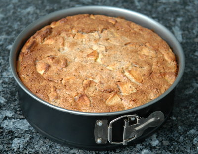

| Zutaten für 4 Personen: | |
| 150 g | Brot |
| 2 dl | Milch |
| 750 g | Äpfel |
| 3 | Eier |
| 50 g | Butter oder Margarine |
| 100 g | Zucker |
| 60 g | Haselnüsse gemahlen |
| TL | Zimt |
| Paniermehl | |
(Springform 22 cm Ø)
Form befetten und mit Paniermehl ausstreuen. Brot in 1 cm grosse Würfelchen schneiden und mit heisser Milch übergiessen.
Äpfel zurüsten und fein schneiden.
Eier Teilen. Eigelb, Butter und Zucker schaumig rühren. Eiweiss zu Schnee schlagen.
Brot fein zerstossen.
Zutaten sorgfältig mischen. Masse in die Form geben und 1 bis 1,25 Stunden im gut mittelheissen Ofen (200°C) backen.
Auf Zimmertemperatur gekühlt servieren.
Statt mit Brot und 2 dl Milch kann der Apfeltschu auch mit einem Griessbrei aus 6 dl Milch, 90 g Griess, 1/4 TL Salz (ca. 15 Minuten kochen) zubereitet werden.
Herbert Eigenmann, Code: AAT
Ganz nett. Erinnert stark an Apfelwähe. RE 11.1.2009
@LINKBACK_TAG@ @WAKELOCK@